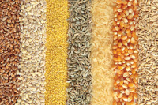
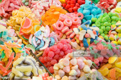
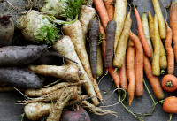
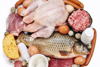
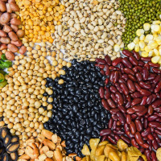
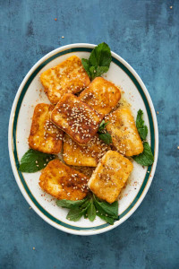
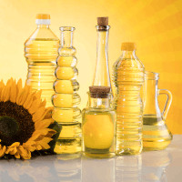
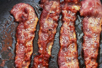

Här kan du läsa om vilka livsmedel som är rikast på kolhydrater,
fett, och protein.
En utmärkt startpunkt för att få alla rätt i MatQuiz!
Psst! Glöm inte att anmäla dig till MatQuiz nyhetsbrev nedanför.
Makronutrienter
Kolhydrater
Varför är de tomma så löjligt goda?
Kolhydrater utgör majoriteten av den klassiska tallriksmodellen så
det är tur att livsmedel som innehåller mycket kolhydrater ofta är
billiga. Ris, gryner, och sädesslag är packade med kolhydrater.
Gryner som bulgur och quinoa kräver sällan mer förberedning än
kokning medan sädesslag som vete, havre, och råg ofta förtärs i form
av pasta och bröd.

Alla sockerarter räknas in i kolhydraterna, det är därför inte
överaskande att livsmedlet strösocker innehåller 100% kolhydrater.
Utöver det sackaros som finns i godis så innehåller även frukt och
bär en del kolhydrater i form av fruktsocker. Dessa kolhydrater är
oftast färre än i mer "matiga" kolhydratskällor som till
exempel gryner och ris. Vissa luras med att "frukt är godis", detta
har dock inte vetenskapligt stöd. Vill du ha en ordentligt
sockerchock så rekommenderas riktigt godis, gärna lakrits.

Potatis, morot, och palsternacka är exempel på livsmedel som
innehåller en ansenlig mängd kolhydrater men mindre än gryn, ris,
och sädesslag. Samtidigt är de mer matiga än frukt och bär.
Väljer man potatis kan man därför unna sig en flott brunsås för att
fylla ut kalorierna jämfört med om man använde pasta. Potatis är
därför det ultimata köttbulle-tillbehöret, inte makaroner som många
felaktigt tror.

Protein
Inte bara från djur!
Lever det (eller har levt) så kan du vara ganska säker på att det
huvudsakligen består av protein. Nöt, fläsk, lamm/get, vilt, fisk,
fågel, och till och med insekter, tillhör livsmedel med högt
proteininnehåll.

Inte långt bakom levande ting innehåller baljväxter som bönor,
linser, och ärtor även dem en ansenlig mängd protein, ofta
tillsammans med en relativt hög mängd kolhydrater. Baljväxter är även
väldigt billiga i förhållande till animaliska produkter. Perfekt för
den late och/eller fattige kocken!

En av livets stora höjdpunkter är osten. Det är inte bara bland det
godaste man kan skyffla in i pajhålet, ost är dessutom fullt med
proteiner!
Till skillnad från baljväxternas kolhydrater paras proteinerna i ost
istället med, ofta mycket, fett. Bönsallad och stekt halloumi?
Samtliga makronutrienter i ett, sign me up!

Fett
Mättat eller omättat, mätt blir man.
Från att få ägget att enkelt glida ur stekpannan till att piffa upp
din tråkiga grönblads-mix kommer oljorna till undsättning. Olja kan
göras av en överaskande mängd saker som oliver, raps, nötter, och
döda, det vill säga alla, dinosaurier (luras dock inte att tro att
den sistnämnda innehåller mycket protein bara för att den är gjord på
före detta levande). Oavsett härkomst kan du med ro satsa dina pengar
på en fetthalt mellan 90 och 100%.

Precis som de flesta av oss med åtminstone en gnutta livsglädje,
alternativt bristande disciplin (skyldig!), så bär många djur på en
del fett.
Vissa styckdetaljer innehåller mer än andra och vissa djur tenderar
att innehålla mindre, till exempel vilt och fisk (undantaget vissa
som lax, makrill, och sill); här får ögat guida. Det ryktas att man
kan driva en LCHF:are enkom på fett från bacon - Till skillnad från
bacon ska dock detta rykte tas med en nypa salt.

Mjölk har den fantastiska egenskapen att den aldrig kan bli dålig,
den förvandlas bara till nya mejeriprodukter, vissa har till och med
en egen kultur! Många mejeriprodukter är fett rika på fett. Ost är en
av dem men svårslaget är mängderna i grädde och smör.